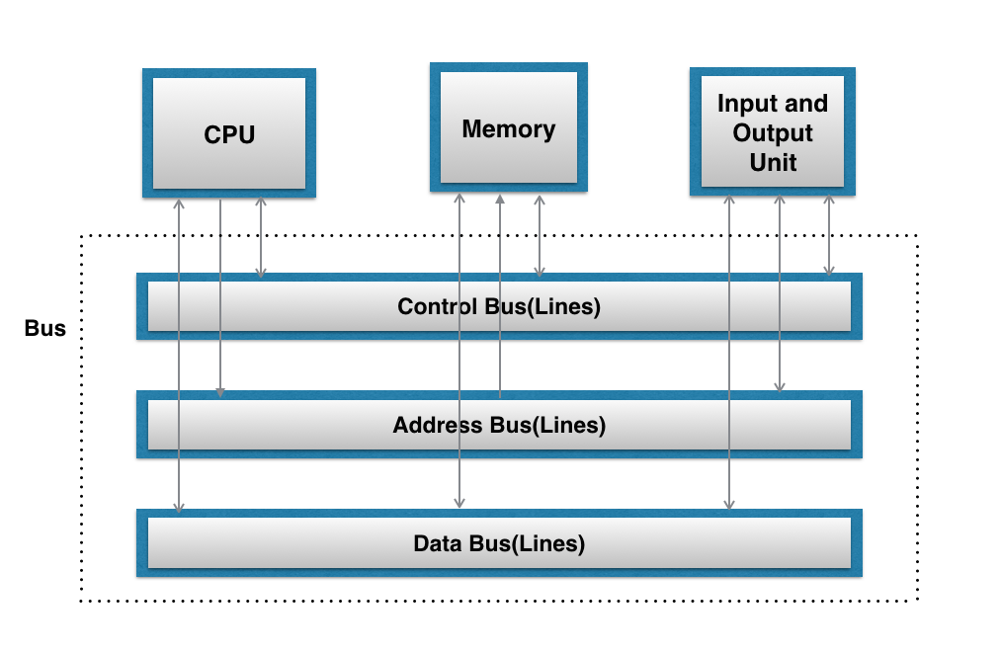
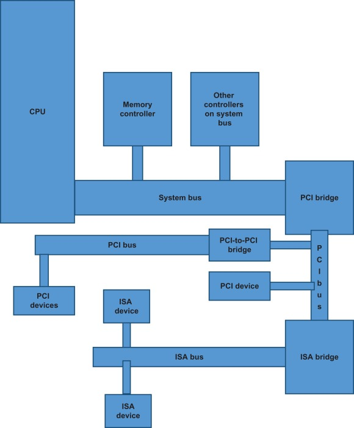

Embedded Linux Systems
1. Hardware Support
2. Development Tools
3. Kernel Considerations
4. Root Filesystem Content
5. Storage Device Manipulation
6. Root Filesystem Setup
7. Setting Up the Bootloader
8. Setting Up Networking Services
9. Debugging Tools
Hardware Support
Processor Architectures
Linux runs on a large and ever-growing number of machine architectures, but not all these architectures are actually used in embedded configurations, as already mentioned. A quick look at the arch subdirectory of the Linux kernel sources shows 24 architectures supported in the official kernel at the time of this writing, with others maintained by developers in separate development trees, possibly making it into a future release of the official kernel. Of those 24 architectures, we will cover 8 that are used in embedded Linux systems (in alphabetical order): ARM, AVR32, Intel x86, M32R, MIPS, Motorola 68000, PowerPC, and Super-H.
ARM
ARM, which stands for Advanced RISC Machine, is a family of processors maintained and promoted by ARM Holdings Ltd. In contrast to other chip manufacturers such as IBM, Freescale, and Intel, ARM Holdings does not manufacture its own processors. Instead, it designs complete CPU cores for its customers based on the ARM core, charges customers licensing fees on the design, and lets them manufacture the chip wherever they see fit. Currently, ARM CPUs are manufactured by Marvell (formerly Intel, under the “Xscale” brand), Toshiba, Samsung, and many others. The ARM architecture is very popular in many fields of application, from cell phones and PDAs to networking equipment, and there are hundreds of vendors providing products and services around it.
AVR32
AVR32 is a newcomer to the industry (2006). It is a 32-bit microprocessor architecture designed by the Atmel corporation, which also produces the AVR 8-bit microcontroller devices used in deeply embedded situations. . AVR32 comprises several subarchitectures and can additionally support the usual DSP and Java acceleration instructions one has come to expect from recent embedded processors. AVR32 provides for several modes of CPU operation; both fixed width 16-bit instructions and “extended” 32-bit instructions are supported.
Intel x86
The x86 family starts with the 386 introduced by Intel in 1985 and goes on to include all the descendants of this processor, including the 486, the Pentium family, the NetBurst (P6), Xeon, Core, and Core 2, along with compatible processors by other vendors such as National Semiconductor and AMD (which first popularized the x86_64 64-bit extensions of the x86 over Intel’s redesigned Itanium, often simply called the “Itanic” by Linux developers for its lack of widespread adoption outside of a few niche markets).
M32R
M32R is another recent (2003) 32-bit microprocessor architecture, designed by Renesas Technology and implemented both in silicon and as an FPGA synthesized soft-logic core. Unlike many other FPGA-based systems running Linux, the M32R actually implements a full MMU and can therefore run a stock Linux kernel without using uClinux’s user space utilities. M32R has been used in a variety of applications, ranging from consumer electronics devices such as PDAs, cameras, and the like to engine control units.
MIPS
MIPS is the brain child of John Hennessey—mostly known by computer science students all over the world for his books on computer architecture written with David Patterson and is the result of the Stanford Microprocessor without Interlocked Pipeline Stages project (MIPS). Support for Linux on MIPS is more limited than for other architectures such as the Intel x86 or the PowerPC. In fact, few of the main distributions have actually been ported to MIPS. When available, commercial vendor support for MIPS is mostly limited to embedded architectures.
Motorola 68000
The Motorola 68000 family is known in Linux jargon as m68k. The MMU-equipped varieties have been supported under Linux for quite some time, and the MMU-less varieties have been supported starting with the 2.6 kernel. m68k came in second only to the Intel x86 as a popular 1980s architecture. Apart from being used in many mainstream systems by Atari, Apple, and Amiga, and in popular workstation systems by HP, Sun, and Apollo, the m68k was also a platform of choice for embedded systems development.
PowerPC
PowerPC (PPC) architecture was the result of a collaboration between Apple, IBM, and Motorola (now Freescale)—the “AIM alliance.” It inherited ideas from work done by the three firms, especially IBM’s Performance Optimization With Enhanced RISC (POWER) architecture, which still exists and is heavily used as a 64-bit workhorse in IBM’s many server offerings. PowerPC is mostly known for its original use in Apple’s Macs, but there are other PowerPC-based workstations from IBM and other vendors, as well as many PowerPC-based embedded systems. The popular TiVo system, for instance, was based on an embedded PowerPC processor, for which TiVo actually did the original work required to get Linux running on such PowerPC variants.
SuperH
In an effort to enhance its 8- and 16-bit H8 line of microcontrollers, Hitachi introduced the SuperH (SH) line of processors in the early 1990s. These manipulate 32-bit data internally and offer various external bus widths. Later, Hitachi formed SuperH Inc. (now Renesas Technology) with STMicroelectronics (formerly SGS-Thomson Microelectronics). Renesas licenses and steers development of the SuperH much the same way ARM Holdings Ltd. does for ARM and MIPS Technologies Inc. does for MIPS. The early implementations of the SuperH, such as the SH-1, SH-2, and their variants, did not have an MMU. Starting with the SH-3, however, all SuperH processors include an MMU. The SuperH is used within Hitachi’s own products, in many consumer-oriented embedded systems such as PDAs, and in some older game consoles, too.
Buses and Interfaces
The buses and interfaces are the fabric that connects the CPU to the peripherals on the system. Each bus and interface has its own intricacies, and the level of support Linux provides them varies accordingly. A rundown follows of some of the many different buses and interfaces found in typical embedded systems, and the level of support Linux provides them. Some of these other buses are used in older systems, are workstation- or server-centric, or are just a little too quirky to go into here. In addition, some buses are proprietary to a specific system vendor, or are not yet heavily adopted. We won’t discuss buses that lack widespread adoption, nor will we cover socalled third generation buses such as HyperTransport in any detail, since they are usually used only semitransparently as a CPU-level root bus. If you’re designing a new embedded system from scratch, you might have no enumerable, higher-level bus structure for certain devices. Instead, these may sit solely within the CPU’s memory map as memory-mapped devices. Linux provides explicit support for just this kind of embedded situation, through the use of “platform devices.” This abstraction allows the kernel to support devices that it cannot simply enumerate when it scans the available bus topology during bootup. Such devices are detected either through the use of special platform-specific code or may be mentioned in the system bootloader/kernel interface for example, the flattened device tree passed between the bootloader and the kernel on PowerPC platforms.

PCI/PCI-X/PCIe
The Peripheral Component Interconnect (PCI) bus, managed by the PCI Special Interest Group (PCI-SIG), is the most popular bus currently available. Designed as a replacement for the legacy Intel PC ISA bus, PCI is now available in two forms: the traditional parallel slot form factor using 120 (32-bit PCI) or 184 (64-bit PCI-X) I/O lines, and the newer (and also potentially much faster) PCI Express (commonly called PCIe or PCI-E) packet-switched serial implementation as used in most recent designs. Whether conventional PCI, 64-bit PCI-X, or serial PCI-Express, PCI remains software compatible between the different implementations, because the physical interconnect used underneath is generally abstracted by the standard itself. Linux support is very good indeed, but for those times when special support quirks are needed, Linux offers PCI “quirks” too.

1. ExpressCard (Replaces PCMCIA’s PC Card)
2. PC/104, PC/104-Plus, PCI-104, and PCI/104-Express
3. CompactPCI/CompactPCIe
4. SCSI/iSCSI
5. USB
6. IEEE1394 (FireWire)
7. InfiniBand
8. GPIB
9. I2C
IO
1. Serial Port
2. Parallel Port
3. Modem
4. Data Acquisition
5. Keyboard
6. Mouse
7. Display
8. Sound
9. Printer
Storage
1. Memory Technology Devices
2. PATA, SATA, and ATAPI (IDE)
3. Non-MTD Flash-Based devices
General-Purpose Networking
1. Ethernet
2. IrDA
3. IEEE 802.11A/B/G/N/AC/AX/BE (Wireless)
4. Bluetooth
Industrial-Grade Networking
1. CAN
2. Modbus
System Monitoring
Both hardware and software are prone to failure, sometimes drastically. Although the occurrence of failures can be reduced through careful design and runtime testing, they are sometimes unavoidable. It is the task of the embedded system designer to plan for such a possibility and to provide means of recovery. Often, failure detection and recovery is done by means of system monitoring hardware and software such as watchdogs.
Linux supports two types of system monitoring facilities: watchdog timers and hardware health monitoring. There are both hardware and software implementations of watchdog timers, whereas health monitors always require appropriate hardware. Watchdog timers depend on periodic reinitialization so as not to reboot the system. If the system hangs, the timer eventually expires and causes a reboot. Hardware health monitors provide information regarding the system’s physical state. This information can in turn be used to carry out appropriate actions to signal or solve actual physical problems such as overheating or voltage irregularities
Development Tools
1. A Practical Project Workspace
In the course of developing and customizing software for your target, you need to organize various software packages and project components in a comprehensive and easy-to-use directory structure.
2. GNU Cross-Platform Development Toolchain
A toolchain is a set of software tools needed to build computer software. Traditionally, these include a linker, assembler, archiver, C (and other languages) compiler, and the C library and headers. This last component, the C library and its headers, is a shared code library that acts as a wrapper around the raw Linux kernel API, and it is used by practically any application running in a Linux system.
3. C Library Alternatives
Given the constraints and limitations of embedded systems, the size of the standard GNU C library makes it an unlikely candidate for use on our target. Instead, we need to look for a C library that will have sufficient functionality while being relatively small.
4. Java
5. Perl
6. Python
7. Other Programming Languages
8. An Integrated Development Environment
9. Terminal Emulators